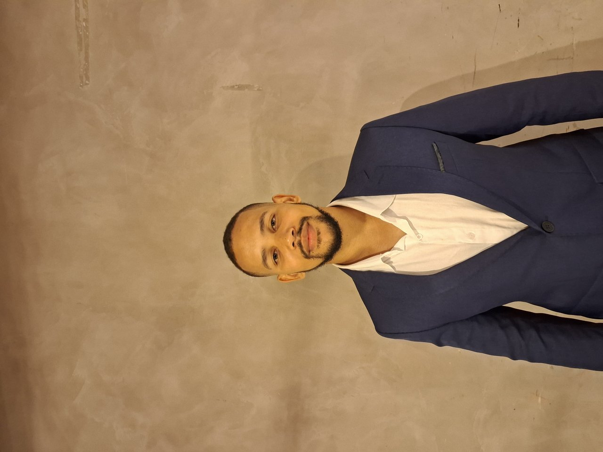

Projetos freelancer
Fora da Horizon
Projetos independentes desenvolvidos para clientes diversos. Clique numa imagem para ver a galeria completa.
Desenvolvimento de Software · Setor Público
Coordenador de Desenvolvimento de Software
Lidero equipes e decido arquitetura em sistemas críticos para o setor público e a saúde digital, do due diligence técnico à entrega com o cliente.

Sobre mim
Lidero 4 equipes e cerca de 11 profissionais em sistemas de missão crítica para o setor público e a saúde digital. Formado em Ciência da Computação, com pós-graduação em Big Data, Analytics e BI, e mais de 5 anos de experiência em desenvolvimento de sistemas web complexos.
Respondo pela arquitetura das soluções, pela due diligence técnica de sistemas legados assumidos para sustentação e pela governança de risco técnico das operações sob minha coordenação. Atuo também na engenharia de soluções com inteligência artificial, incluindo cadeias de agentes e integração de LLMs a produtos em produção.
Habilidades
Base técnica e de gestão construída ao longo da trajetória, do desenvolvimento à coordenação.
Trajetória
Experiência profissional em ordem cronológica reversa.
Sistemas em destaque
Sistemas de missão crítica em produção ou desenvolvimento, sem identificação de cliente ou órgão, por confidencialidade contratual.
Plataforma do poder concedente para apuração de indicadores de operação de transporte, cujos resultados alimentam diretamente a remuneração contratual das concessionárias. Responsável pela especificação técnica e pela arquitetura da solução.
Plataforma multi-cidade de supervisão de saúde de câmeras de videomonitoramento, cobrindo 6 municípios. Avaliação técnica do sistema legado assumido para sustentação e plano de evolução priorizado por ondas.
Ecossistema de registro de atividades de agentes comunitários de saúde, com integração ao e-SUS AB. Decisão de arquitetura e reescrita da camada de integração de visitas domiciliares para eliminar indisponibilidade intermitente.
SaaS para escritórios de advocacia trabalhista, com produção assistida de peças processuais por meio de uma cadeia de agentes de IA especializados e estrutura de caso versionada por nível de confiança.
Projetos freelancer
Projetos independentes desenvolvidos para clientes diversos. Clique numa imagem para ver a galeria completa.
Contato
Aberto a oportunidades, projetos e parcerias.
Salvador, Bahia, Brasil
jonnasnogueira2@gmail.com
(71) 99734-3101